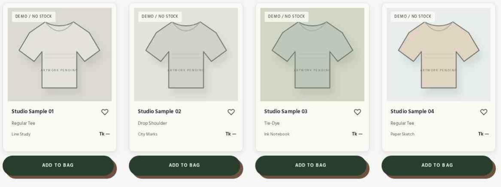
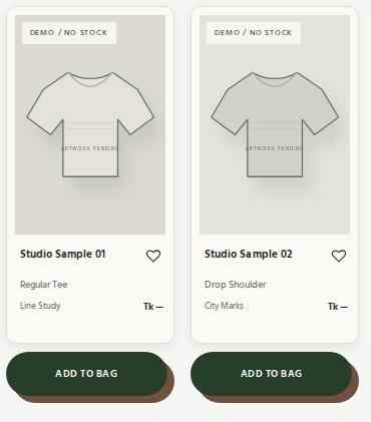

CHAPCHITRA / OWNER REVIEW / ACTUAL BROWSER CAPTURES
Compact Polaroids, External Add to Bag & Adaptive Shadows
These are real Chromium screenshots of the updated Shop page, showing the approved Polaroid presentation with rounded 10px paper frames, external stationary pill buttons and a reusable warm walnut shadow on light surfaces.
The entire card-plus-button unit is approximately 6–8% shorter than the previously approved Polaroid version. The frame alone receives the original alternating 1.4° hover tilt and 5px lift; the separate button never tilts. On dark Forest and Olive surfaces, shadows switch to contrasting Beige or Gray using design tokens.
Desktop · 1440px · 4-column Shop

Mobile · 390px · 2-column Shop

Measured responsive reduction
- Desktop / 1440px
- −6.8%
- Tablet / 820px
- −7.6%
- Mobile / 390px
- ≈ −7%
Measurements compare rendered card-plus-button units at the same breakpoints. These remain demonstration products without approved inventory or prices.